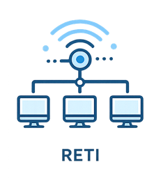

Reti & Connettività
Configurazione reti aziendali, Wi-Fi e ottimizzazione della velocità di navigazione.
PC & Server
Assistenza hardware e software, manutenzione server e ripristino postazioni di lavoro.
Accessi & Sicurezza
Risoluzione problemi di login, recupero account e supporto per gli utenti in difficoltà.

Chi Sono
Mi chiamo Lorenzo Coppola e lavoro nel settore IT dal 2001. Ho iniziato come sistemista, lavorando direttamente su reti, server e infrastrutture aziendali, dove i problemi non erano teoria… ma blocchi reali che fermavano il lavoro.
Oggi metto a disposizione oltre vent’anni di esperienza per risolvere problemi tecnici in modo rapido e concreto, senza giri di parole e senza perdita di tempo.
Se qualcosa non funziona, intervengo per sistemarlo definitivamente. Perché quando un sistema si blocca, non serve una spiegazione… serve una soluzione.
Tariffa Trasparente
Interventi rapidi, troubleshooting professionale e disponibilità immediata per emergenze.
Scrivimi su WhatsApp